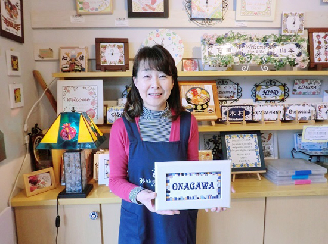
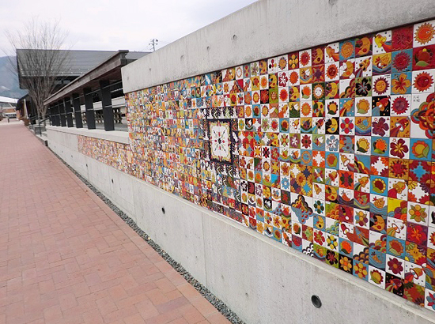

被災地のいま 宮城県・福島県の現状
3.11を忘れない・・
みやぎ生協から被災地・宮城のいまをお伝えします
第68回 2019年4月5日 ―復興を担う女性たち―
「女川スペインタイルを地域の産業・文化として根付かせたい」
NPO法人みなとまちセラミカ工房
女川スペインタイルは、震災後に誕生した女川独自の工芸品です。きっかけは、町の復興を考える人たちの中から出た「スペインタイルを女川の新しいお土産にしよう」というアイディアでした。協力を求められたのが、震災前、女川で陶芸教室をやっていた阿部鳴美さんです。阿部さんは東京の教室へ通ってタイルづくりを学びました。スペインにも足を運び、何十年経っても色あせないタイルに魅了されました。
2013年6月、阿部さんは陶芸の仲間とともに工房をオープンします。事業化の不安はありましたが、仲間や地元の人たちの声が励みになりました。
「当時はがれきが片付いた直後で辺り一面真っ茶色でした。彩り豊かなタイルに“被災地でこんな綺麗な色を見られるなんて！”と感動したり、女川ならではの大漁旗や獅子舞の絵付けをしたタイルを“懐かしいねー”“元気が出る”と喜ぶ地元の方がいたりして、勇気づけられました」。
阿部さんたちはクォリティの高いタイルづくりに打ち込む一方、2014年から、お客さまの要望に応えて「メモリアル体験」を始めました。絵付けワークショップで2枚のタイルを作り、1枚は自分用、もう1枚は町に残していくプロジェクトです。お客さまが町に残したタイルは、商業施設の壁面や階段などのスペースに貼られ、いつでも見られるようになっています。「自分の作ったタイルが町に残っていれば、女川にまた行ってみようと思っていただけるかも知れない。全国の人と女川をつなぐ、今と未来をつなぐ役割をタイルが果たしてくれればいいなと思っています」。
女川駅前の商店街シーパルピアにある店舗には、お土産品として人気のコースターやアロマタイル、受注制作の表札・メモリアルプレートなどのタイルが陳列されています。町にはお洒落なタイルの看板を掲げた商店があります。再建した家にもタイルの表札が使われています。タイルの壁画が飾られた災害公営住宅もあります。復興でどんどん生まれ変わっていく町と歩みをともにして、タイルも増えてきたのです。
「事業を長く継続し、女川スペインタイルを女川の産業として、地域の文化として、根付かせていきたい」と阿部さんは夢を語ります。スペインのように何百年も伝統の産業・文化として息づくタイルづくりを目指し、阿部さんたちは今その芽を大切に育てています。
※NPO法人みなとまちセラミカ工房 https://www.ceramika-onagawa.com/

▲阿部鳴美（なるみ）さん（NPO法人みなとまちセラミカ工房代表）。「今後は腕の良い作り手がオリジナル作品で自分の工房を持てるようにしていくことも考えたい」と言います。

▲女川駅前の商業施設ハマテラスの壁面に貼られたメモリアルタイル。他の場所のタイルと合わせると全部で1300枚ぐらいあります。
前の記事
第67回「―復興を担う女性たち―「希少なパステル染めを、気仙沼の人の手で育てていきたい」株式会社インディゴ気仙沼」（2019年3月5日）